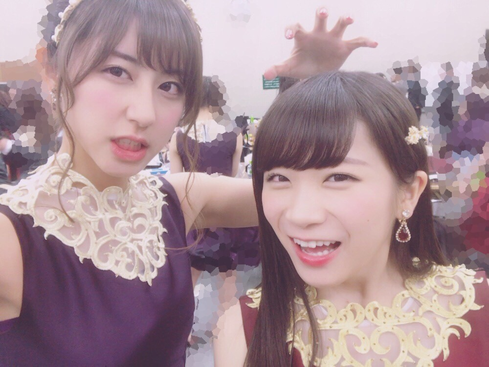
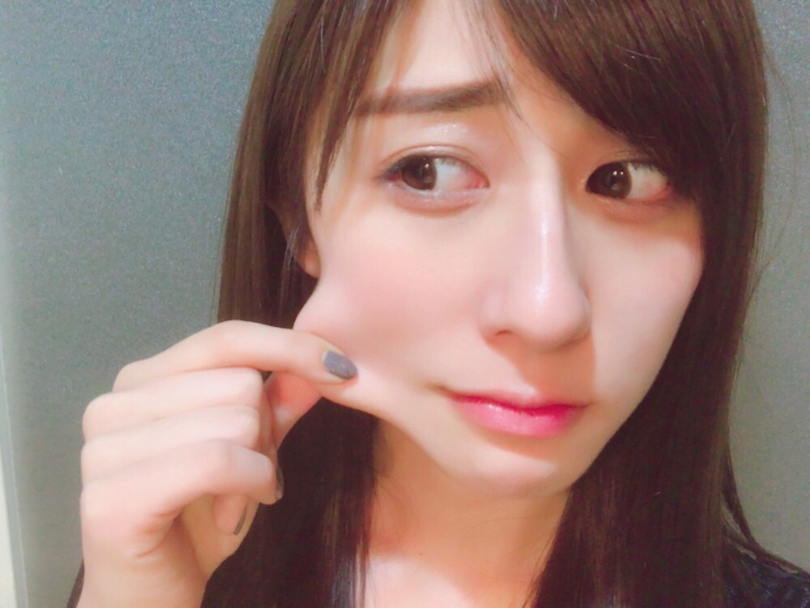

| 2017/01 06 Fri | 斎藤ちはる お餅とさくらと。 |
ちはるーむへようこそ！

シャー！！(｢･o･)｢
真夏を威嚇。
真夏のほっぺはお餅のように伸びる！
触ってびっくり！
やわもち！
そう言えば、
二の腕とか色んなところも伸びるんだよ〜と
自慢してくれたのを今思い出しました。
かくいう私もほっぺ、伸びます。

真夏ほどではないかな？？
でも、人よりは伸びるはず！
今は本物のお餅が美味しい季節ですが
皆さんはお餅、どんな味付けで食べますか？
私はバター醤油です◎
海苔で巻くと更に美味しいです。
斎藤家ではバター醤油が主流なのです！
珍しいらしいのですが、
小さい頃からそれで育ってきたので
全然気付きませんでした...
そういう事が多いです(> <)
(各家に歌もあると思っていたし...)
バター醤油やった事ない方は
是非試してみてほしい...！
本当に美味しいから！！
そして皆さん、
私に色々な味付けを教えてください〜◎
大好きなお餅を色んな味で食べてみたいっ
にんまり。
---------------------------------------♡
"雪やこんこん
あられやこんこん
降っても降ってもまだ降り止まぬ
犬は喜び庭駆け回り
猫はこたつで丸くなる"
という歌がありますが、
我が家の愛犬"さくら"は
猫なんじゃないかと思います。
散歩が嫌いなのでずっとお家にいて、
ずっと誰かの膝の上や
うたた寝している家族の上や
あったかい毛布の上で寝ています。
さくらの寝ている写真ばっかり！！
あと、さくらは
男の子用の服の方が似合います。
女のコっぽい薄ピンクの服や
フリフリのスカートの服よりも
青や真っ赤など男の子っぽい方が似合う。
猫みたいで男の子みたいって...！！
犬で女のコなのに...！！
(￣^￣)...
そんなところも本当に可愛くて私の癒しです。
------------------------------♡
♬ ChihaMusic
「光の街」back numberさん
アルバム"アンコール"に入っているので
沢山ループしていますが、
聴けば聴くほど好きになる曲。
2番の歌詞の日常を切り取った雰囲気が
あったかくて凄くいい。
でもサビの歌詞は切なくて、
そのギャップがまた好き。
"君は知っているのだろうか
こんなに救われている僕を
こんなにも世界が輝いて見える事を"
そんなつもりはないのに
知らぬ間に人の心を救う素敵な人って
世の中にはいるよね。
私はそんな人になりたいな。
人の心に寄り添うあったかい人に。
back numberさんのアルバムが
本当に良くて幸せ...
朝が早くとも夜が遅くとも
沈んでいる時も楽しい気分の時も
ずっと聞いていたくなる。
大好きな曲ばっかり！！
おやすみ〜
斎藤ちはる